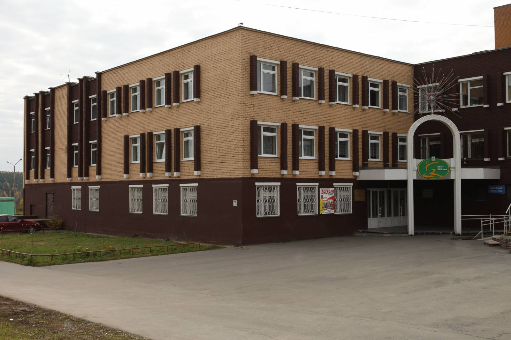

Детская хореографическая школа  Google Maps
Google Maps

(ДХШ), муниципальное бюджетное учреждение дополнительного образования детей. Открыта в 1995 при танцевальном зале «Юность» (см. Дом творчества и досуга «Юность»). Первый директор Р.П. Васильева. Преподаватели: Н.Н. Сивковская, Т.Ю. Комарова, С.Е. Вахрамеева, концертмейстер О.С. Хрулёва. В 1997 переведена в специализированное здание с 3 балетными, 2 теоретическими классами, концертным залом на 500 мест. В 2009 школе присвоена высшая категория. На 2012 в ДХШ обучается 230 учащихся от 6 до 14 лет, основной курс рассчитан на 8 лет. Работают 8 преподавателей хореографических и теоретических дисциплин, 6 концертмейстеров.
В учебный план включены: классический, народно-сценический, историко-бытовой и современный бальный танцы, ритмика, свободная пластика, актерское мастерство, теория музыки, история хореографического искусства, игра на фортепиано. В репертуаре школы более 100 концертных номеров, в т. ч. балетный спектакль «Снегурочка», музыкальные спектакли «Золушка», «Гармония стихий». Создан ансамбль выпускников (2000, руководитель Н.В. Курчевских), открыт класс профессиональной подготовки для поступления в училища и институты культуры (2005), группы раннего эстетического развития «Топ-топ» для детей 4,5—5 лет (2001), «Лапушки» для детей 3,5 лет (2005). 15 выпускников продолжили обучение в области хореографии в специализированных учебных заведениях.
ДХШ - обладатель золотого диплома Международного фестиваля «Роза ветров» (Москва, 2010), Гран-при Международного конкурса «Друзья Болгарии» (Адлер, 2011; Албена, 2011), звания лауреата международных конкурсов в Екатеринбурге, Казани, Кирове, Москве, Нижнем Новгороде, Санкт-Петербурге.
С.Е. Вахрамеева